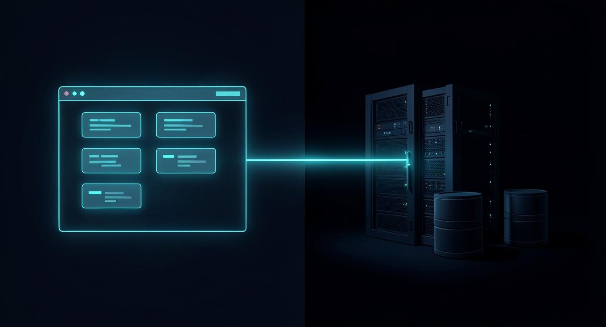
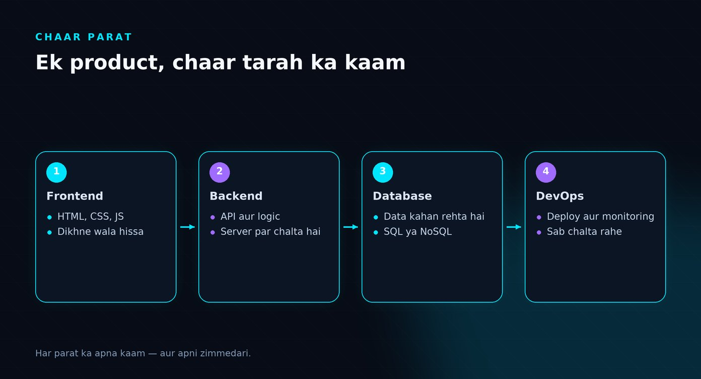
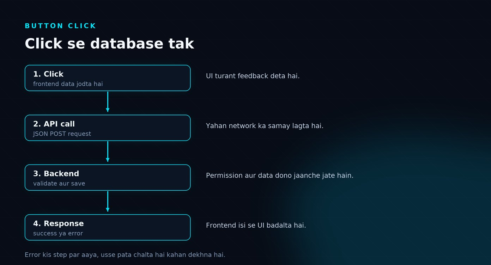

Frontend vs Backend vs Full Stack: Kaun Kya Karta Hai

"Web development सीखना है" — यह सोचकर जब कोई शुरू करता है, तो पहला सवाल यही आता है: frontend सीखूँ या backend? किसमें job ज़्यादा है, किसकी salary बेहतर है, और "full stack" का matlab क्या है? जवाब इससे शुरू होता है कि असल में एक web page बनता कैसे है।
इस guide में मैं दोनों तरफ़ का काम अलग-अलग खोलूँगा — frontend में HTML, CSS, JavaScript और framework क्या करते हैं, backend में server, API और database कैसे जुड़ते हैं, एक request दोनों के बीच कैसे चलती है, और full stack वाला व्यक्ति असल में कितना गहरा होता है। अंत में तीन तरह के शुरुआती profiles के लिए रास्ता और 30 दिन का plan भी है।
छोटा जवाब: Frontend वह हिस्सा है जो user के browser में चलता है — layout, buttons, forms, animation. Backend वह हिस्सा है जो server पर चलता है — data save करना, login जाँचना, दूसरे services से बात करना. Full stack का मतलब है दोनों का काम कर पाना, पर आम तौर पर एक तरफ़ ज़्यादा गहराई के साथ।
Frontend: jo aap dekhte hain
Frontend का काम browser में होता है। जब आप किसी site पर scroll करते हैं, कोई button दबाते हैं, या form भरते हैं — वह सब frontend है। इसकी तीन बुनियादी चीज़ें हैं: HTML जो structure बनाता है, CSS जो रंग, spacing और layout देता है, और JavaScript जो हरकत और logic जोड़ता है।
शुरुआत में यही तीन काफ़ी हैं। पर जब project बड़ा होता है, तो सीधा JavaScript लिखना मुश्किल हो जाता है — इसीलिए frameworks आते हैं। React, Vue और Svelte जैसे tools page को छोटे-छोटे components में बाँट देते हैं, ताकि एक ही header या card को हर जगह दोबारा लिखना न पड़े। Next.js और Nuxt जैसे frameworks उसके ऊपर routing और server-side rendering जोड़ देते हैं।
Frontend में एक और चीज़ बहुत मायने रखती है — performance. आपकी site कितनी जल्दी खुलती है, images कितनी भारी हैं, JavaScript कितना है, और mobile पर layout टूटता है या नहीं। भारत में ज़्यादातर users मध्यम दर्जे के फ़ोन और धीमे network पर आते हैं, इसलिए अच्छा frontend वह है जो साधारण device पर भी चले। इसी विषय पर हमारी Core Web Vitals guide पढ़ें।

Backend: jo parde ke peeche chalta hai
Backend server पर चलता है। इसका काम है requests सुनना, data जाँचना, database से बात करना और जवाब भेजना। जब आप login करते हैं, तो frontend आपका email और password भेजता है; backend उसे जाँचता है, session बनाता है और बताता है कि login सफल हुआ या नहीं।
Backend की भाषा कोई एक नहीं है। JavaScript वाले Node.js चुनते हैं, Python वाले Django या FastAPI, Java वाले Spring, PHP वाले Laravel, और Go या C# भी अपनी जगह हैं। भाषा से ज़्यादा मायने रखती हैं वे अवधारणाएँ जो हर जगह एक जैसी हैं — routing, validation, authentication, database queries, caching और error handling।
Backend का सबसे ज़रूरी हिस्सा database है। यहाँ तय होता है कि data कैसे रखा जाएगा — कौन सी table, कौन सा relation, कौन सा index. एक गलत schema बाद में हर query धीमी कर देता है। इसीलिए backend सीखने वालों को SQL की समझ ज़रूर रखनी चाहिए; शुरुआत के लिए SQL guide है।
Backend में security सबसे ज़्यादा ज़िम्मेदारी वाला हिस्सा है। Password plain text में कभी नहीं रखना, हर input जाँचना, SQL injection से बचना, permissions सही तरीके से लगाना — ये छोटी-छोटी आदतें तय करती हैं कि आपका system टिकेगा या नहीं।
Ek request dono ke beech kaise jati hai
दोनों तरफ़ का काम समझने का सबसे अच्छा तरीका है एक असली action को step by step देखना। मान लें आपने "Order करें" button दबाया।

- Frontend button का click पकड़ता है और ज़रूरी data इकट्ठा करता है।
- वह data JSON बनकर API को POST request में जाता है।
- Backend पहले जाँचता है — user logged in है? data सही है? stock है?
- सब ठीक हो तो database में order लिखा जाता है।
- Backend response भेजता है — success या error, कारण के साथ।
- Frontend उस response के हिसाब से UI बदलता है — thank you message या error।
इस पूरे सफ़र में दोनों तरफ़ की गलतियाँ अलग दिखती हैं। अगर button दबाने पर कुछ नहीं होता, तो समस्या frontend में है। अगर "Something went wrong" आता है, तो request पहुँची पर backend में कुछ फेल हुआ। अगर page ही नहीं खुलता, तो समस्या network या hosting की है। यह फर्क जानना debugging में सबसे काम आता है।
API: dono ke beech ka contract
Frontend और backend एक दूसरे को सीधे नहीं जानते; वे API के ज़रिए बात करते हैं। API एक तरह का contract है — "इस address पर, इस तरह का data भेजो, और इस तरह का जवाब मिलेगा।" ज़्यादातर modern APIs REST या GraphQL होते हैं, और data JSON में आता-जाता है।
POST /api/orders
{
"product_id": 42,
"quantity": 2
}
// response
{ "order_id": 9182, "status": "confirmed" }इस contract का फायदा यह है कि दोनों तरफ़ के लोग अलग-अलग काम कर सकते हैं। Frontend टीम mock data पर UI बना सकती है, और backend टीम उसी contract पर server बना सकती है। जब contract बदले, तो दोनों को पता होना चाहिए — इसीलिए API versioning और documentation ज़रूरी है।
एक practical बात: शुरुआत में लोग API को बहुत जटिल बना देते हैं। ज़रूरत नहीं। पाँच-छह endpoints से शुरू करें, नाम साफ़ रखें, status codes सही दें, और error messages ऐसे लिखें कि frontend उन्हें दिखा सके।
Full stack ka asli matlab
Full stack developer वह है जो दोनों तरफ़ काम कर सके — UI बना सके, API लिख सके, database से जोड़ सके, और उसे deploy भी कर सके। यह "सब कुछ जानने वाला" नहीं होता; यह "दोनों तरफ़ का basic से अच्छा" होता है।
छोटी team और freelance काम में full stack की बहुत माँग है, क्योंकि एक ही व्यक्ति पूरा feature बना सकता है। बड़ी कंपनी में अक्सर काम बँटा होता है — एक टीम UI पर, दूसरी API पर, तीसरी infrastructure पर। इसलिए "full stack" एक शुरुआती फायदा है, पर किसी एक क्षेत्र में गहराई बाद में ज़रूरी हो जाती है।
| पहलू | Frontend | Backend |
|---|---|---|
| कहाँ चलता है | User का browser | Server |
| मुख्य भाषा | JavaScript / TypeScript | Python, Node, Java, PHP, Go |
| सबसे बड़ा सवाल | "कैसा दिखे और कैसे चले" | "data सही और सुरक्षित रहे" |
| आम tools | React, Vue, Tailwind | Django, Express, Postgres |
| दिखने वाला असर | तुरंत दिखता है | धीरे पता चलता है |
Kaun sa rasta chunein
1. अगर आपको design और visual चीज़ें पसंद हैं — frontend से शुरू करें। तुरंत नतीजा दिखता है, जिससे motivation बनी रहती है। शुरुआत HTML, CSS और JavaScript से करें, फिर एक framework.
2. अगर आपको logic, data और system पसंद है — backend से शुरू करें। Python या Node से शुरुआत आसान है। पहले एक छोटा API बनाएँ, फिर database जोड़ें।
3. अगर आपको अपना project जल्दी बनाना है — full stack रास्ता लें, पर क्रम में। पहले frontend से एक page बनाएँ, फिर उसी page को API से जोड़ें। एक साथ दोनों सीखने की कोशिश में अक्सर दोनों अधूरे रह जाते हैं।
एक और बात — डिग्री से ज़्यादा portfolio मायने रखता है। दो अच्छे projects, जिनमें login, database और असली use case हो, किसी भी certificate से ज़्यादा असर करते हैं। और अगर आप पहली बार programming सीख रहे हैं, तो Python roadmap या Git और GitHub guide से शुरुआत करें।
Teen mahine ka realistic plan
हफ़्ता 1–2: HTML और CSS. एक static page बनाएँ — अपना portfolio, बिना JavaScript के।
हफ़्ता 3–4: JavaScript basics — variables, functions, events, fetch. उसी page पर एक form जोड़ें जो कुछ calculate करे।
हफ़्ता 5–6: एक framework (React या Vue) और उससे दो-तीन components। यहीं समझ आएगा कि framework क्यों चाहिए।
हफ़्ता 7–8: Backend basics — एक छोटा API जो data लौटाए, और उसे frontend से जोड़ें।
हफ़्ता 9–10: Database — एक table, CRUD operations, और validation.
हफ़्ता 11–12: Deploy — project को live करें, HTTPS लगाएँ, और एक README लिखें जिसमें बताएँ क्या बनाया और क्यों।
यह plan तेज़ लग सकता है, पर रोज़ 2 घंटे देने पर यह काम करता है। ज़रूरी बात यह है कि हर हफ़्ते कुछ ऐसा बने जो चले — tutorial देखने से ज़्यादा अपने हाथ से लिखने से सीखते हैं।
Portfolio aur interview me kya dekha jata hai
पहली job के लिए apply करते समय कोई आपका certificate नहीं देखता — वे आपका code और आपकी समझ देखते हैं। दो projects काफ़ी हैं: एक जो static page से आगे जाए, और एक जिसमें login, database और कुछ असली logic हो। हर project के साथ एक छोटा README रखें जिसमें लिखा हो कि क्या बनाया, किस tool से बनाया, और कौन सी समस्या आई और कैसे हल की।
Interview में अक्सर तीन चीज़ें पूछी जाती हैं। पहली — "यह feature कैसे काम करता है?" यहाँ आपको request के सफ़र को शुरू से अंत तक बता पाना चाहिए। दूसरी — "यह bug कैसे ढूँढा?" यहाँ process मायने रखता है, जवाब नहीं। तीसरी — "इसे तेज़ कैसे करेंगे?" यहाँ आपको कम से कम तीन ठोस तरीके बताने चाहिए, जैसे caching, index या image compression।
एक और बात जो अंतर पैदा करती है — आपका project live होना चाहिए। जो link किसी के फ़ोन पर खुल जाए, वह किसी भी screenshot से ज़्यादा असर करता है। इसीलिए deploy करना सीखें, चाहे शुरुआत में मुफ़्त hosting पर ही क्यों न हो।
Paanch common galatfahmiyan
1. "Frontend आसान है।" शुरुआत आसान लगती है, पर accessibility, performance और state management गहरे विषय हैं।
2. "Backend में maths चाहिए।" ज़्यादातर काम logic और data handling का है, advanced maths का नहीं।
3. "Full stack का मतलब सब expert।" नहीं — इसका मतलब है दोनों तरफ़ काम चला सकना।
4. "Framework सीखना सबसे ज़रूरी है।" JavaScript और HTTP की समझ पहले; framework बाद में, और वह भी जल्दी बदलता है।
5. "Job के लिए 10 projects चाहिए।" दो ठोस projects, जिन्हें आप पूरा समझा सकें, काफ़ी हैं।
Mera anubhav
मैंने शुरुआत frontend से की, क्योंकि तुरंत कुछ दिखता था। पहला page बनाया, रंग बदले, और लगा कि सीख गया। फिर जब उस page पर form जोड़ा और data save करना चाहा, तब समझ आया कि असली काम backend में है।
पहली बार API लिखते समय मैंने सब कुछ एक ही file में रख दिया — routes, database queries, validation, सब। दो हफ़्ते बाद जब कुछ बदलना पड़ा, तो पता नहीं चल रहा था कि कहाँ से शुरू करूँ। तभी मैंने files को अलग करना सीखा — routes अलग, models अलग, validation अलग। यह छोटी आदत बाद में सबसे ज़्यादा काम आई।
तीसरी बात: मैंने बहुत समय यह तय करने में लगाया कि "सही" framework कौन सा है। बाद में एहसास हुआ कि framework बदलना आसान है, अवधारणाएँ नहीं। HTTP, database, authentication और caching समझ लें, तो कोई भी framework कुछ हफ़्तों में आ जाता है।
नतीजा
Frontend browser में चलता है और दिखने वाला हिस्सा बनाता है; backend server पर चलता है और data, logic और security सँभालता है। दोनों API के ज़रिए जुड़ते हैं, और full stack का मतलब है दोनों तरफ़ काम कर पाना। अपनी रुचि देखकर शुरुआत चुनें, पर पहले HTML/CSS/JavaScript और HTTP की बुनियाद समझें — बाकी सब उसी पर खड़ा है।
आगे पढ़ें: web hosting — जहाँ बताया है कि यह backend आख़िर रखा कहाँ जाता है, और internet कैसे काम करता है — request का पूरा सफ़र।
अक्सर पूछे जाने वाले सवाल
क्या frontend के लिए design सीखना ज़रूरी है?
पूरा design नहीं, पर spacing, colour और typography की basic समझ बहुत काम आती है।
Backend के लिए कौन सी language सबसे अच्छी है?
कोई एक सबसे अच्छी नहीं। Python शुरुआत के लिए आसान है, JavaScript में एक ही भाषा दोनों तरफ़ चलती है।
Full stack बनने में कितना समय लगता है?
रोज़ 2 घंटे देने पर 8–12 महीने में काम चलाने लायक level आ जाता है; गहराई में सालों लगते हैं।
क्या mobile app बनाने के लिए भी यही सीखना है?
React Native या Flutter से mobile apps बनते हैं, और वहाँ भी frontend-backend का वही ढाँचा काम करता है।
क्या बिना डिग्री job मिल सकती है?
हाँ, portfolio और interview में समझ दिखे तो कई कंपनियाँ skill देखती हैं। पर कुछ जगह डिग्री filter रहता है।